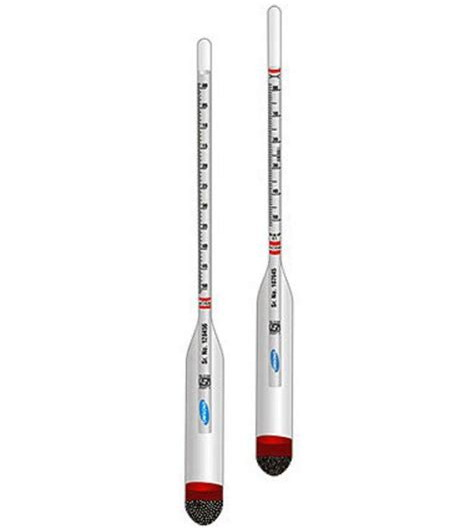

Bij het bepalen van de hoeveelheid suiker in wort of bier worden vaak verschillende meetmethodes gebruikt, verschillende maatstaven gehanteerd en eenheden door elkaar gebruikt en omgerekend. In dit artikel worden een aantal definities vastgelegd en formules voor het omrekenen van de meeteenheden gepresenteerd.
Dichtheid - Soortelijke massa (Engels: Density)
Dichtheid, ook wel soortelijke massa genoemd, is de massa (kg) gedeeld door het volume (m³) van een hoeveelheid stof.
\(\rho = \frac{M}{V}\)
met
- \(\rho\) = dichtheid (kg/m³)
- \(M\) = massa (kg)
- \(V\) = volume (m³)
De dichtheid is afhankelijk van temperatuur en druk en daarom moeten deze (vooral de temperatuur) erbij vermeld worden. Bij 4°C en 1 atmosfeer druk is de dichtheid van water het grootst en bedraagt 999,972 kg/m³. Gemakshalve wordt hiervoor meestal 1000 genomen.
Dichtheid water = 1000 kg/m³ = 1 kg/lit = 1000 gram/lit = 1 gram/ml
De dichtheid meet je met een hydrometer.
Relatieve Dichtheid (Engels: Specific Gravity, SG)
Dit is de dichtheid van een vloeistof gedeeld door de dichtheid van water, beide gemeten bij dezelfde temperatuur en druk. De relatieve dichtheid is daardoor een getal zonder eenheid.
\(\text{relatieve dichtheid vloeistof} = \frac{\text{dichtheid vloeistof}}{\text{dichtheid water}}\)
Bij 4°C en 1 atm. geldt dan ook: relatieve dichtheid water = 1.

De relatieve dichtheid wordt met een hydrometer gemeten.
Soortelijk gewicht
Deze term wordt nog vaak gebruikt om de soortelijke massa aan te geven. Dit is onjuist, het is een verouderde foutieve term want massa is niet hetzelfde als gewicht. Massa is een stofeigenschap die onveranderlijk is. Gewicht is de kracht die de massa uitoefent op de ondergrond onder invloed van de zwaartekracht en wordt uitgedrukt in Newton. Deze kracht is op aarde niet overal hetzelfde. In Nederland oefent een massa van 1 kg een kracht van ongeveer 9,81 Newton uit. Gemakshalve wordt dit vaak afgerond naar 10 Newton.
De afkorting SG staat in het Nederlands meestal voor Soortelijk Gewicht, terwijl er soortelijke massa bedoeld wordt. In de Engelstalige literatuur staat deze afkorting voor Specific Gravity. Wanneer je in formules de term SG tegenkomt is het dan ook van belang dat je weet wat daar precies mee bedoeld wordt.
In dit artikel wordt met SG steeds de Relatieve dichtheid bedoeld.
SG punten (Engels: Graphical Units, GU)
In veel brouwprogramma’s wordt met zogenaamde SG punten gewerkt omdat dit vaak handig is bij het rekenen aan bier.
\(SG_{punten} = Dichtheid_{wort} - Dichtheid_{water}\)
Je kunt het aantal SG punten ook berekenen uit het SG, en omgekeerd ook. De formules hiervoor zijn:
\(SG_{punten} = 1000\times (SG - 1) \Leftrightarrow SG = \frac{SG_{punten} + 1000}{1000}\)
Voor een wort met \(\rho =1050\) gram/liter is \(SG = 1,050\) en \(SG_{punten} = 50\).
Plato en Balling schalen
Balling heeft voor het eerst tabellen gemaakt waarin het SG gekoppeld wordt aan het massapercentage opgelost extract van sucrose in water. Deze tabellen zijn later door Plato verbeterd. Wortextract bestaat voornamelijk uit suikers verkregen uit de mout, maar bevat ook andere in water oplosbare stoffen.
1 graad Plato = 1 gram sucrose per 100 gram oplossing
De Plato schaal is via laboratoriumproeven samengesteld. Er is dus geen exacte formule waarmee je SG naar Plato kunt omrekenen en omgekeerd. Hierna volgen een paar goede benaderingsformules. Het gemakkelijkst is het werken met SG punten.
Een redelijke benaderingsformule voor het aantal graden Plato (P) is:
via SG-punten: \(P = \frac{SG_{punten}}{4} \Leftrightarrow SG_{punten} = 4 \times P\)
via SG: \(P = 250 \times (SG - 1) \Leftrightarrow SG = 1 + \frac{P}{250}\)
Voor een wort met \(SG = 1,050\) is dan \(P = \frac{50}{4} = 12,5\).
Formules Clerck
Deze is wat nauwkeuriger en zien er als volgt uit:
\(P = 259 - \frac{259}{SG} \Leftrightarrow SG = \frac{259}{259 - P}\)
Je komt ook varianten tegen waarin 259 is vervangen door 260.
Voor een wort met \(SG = 1,050\)is dan\(P = 259 - \frac{259}{1,050} = 12,333\).
Regressieformule
Voor een nog grotere nauwkeurigheid, welke zelden nodig is, zijn er regressieformules ontwikkeld. De volgende is daar een voorbeeld van:
\(P = -676,67 + 1286,4 \times SG -800,47 \times SG^2 + 190,74 \times SG^3\)
Voor een wort met \(SG = 1,050\) is dan \(P = 12,337\).
De volgende regressieformule (helaas zonder bronvermelding) kwam ik in Brewer’s Friend tegen:
\(P = -616,868 + 1111,14 \times SG - 630,272 \times SG^2 + 135,997 \times SG^3\)
Voor een wort met \(SG = 1,050\) is dan \(P = 12,388\).
Brix
Brix is net als Plato, een maat voor de massapercentage extract (de opgeloste stoffen) in wort.
1 graad Brix is 1 gram sucrose per 100 gram oplossing.
De definities voor Brix en Plato zijn hetzelfde. Er is alleen een zeer klein verschil tussen Brix en Plato in de omrekening naar SG. Dat heeft met de historische ontwikkeling en meetmethode te maken. De oudste schaal hiervoor is Balling, gebaseerd op tabellen van Balling uit 1843. Fouten hierin zijn door Brix gecorrigeerd waardoor de Brix tabellen ontstonden. Verdere verbeteringen hierin hebben geleid tot de Plato schaal. Ook een oorzaak voor kleine verschillen is dat Plato meestal met een hydrometer gemeten wordt en Brix met een refractometer. En omdat wort geen 100% sucrose-oplossing is vindt er een kleine correctie voor de lichtbreking plaats.
Veel gebruikte omrekenformules tussen Brix en Plato zijn:
\(\text{Brix} = 1,04 \times \text{Plato} \Leftrightarrow \text{Plato} = \text{Brix } / 1,04\)
In de literatuur kom je voor de omrekenfactor ook andere waarden dan 1,04 tegen. Deze liggen meestal russen 1,02 en 1,06.
Formules in brouwprogramma’s
Welke formules in de verschillende software programma’s gebruikt worden is niet gedocumenteerd. In Tabel 1 zie je voor een paar brouwprogramma’s de berekende Plato en Brix waarden voor een drietal SG waarden.
| SG = 1,040 | SG = 1,050 | SG = 1,060 | |
|---|---|---|---|
| Brouwvisie | P = 10,0 Brix = 10,4 | P = 12,4 Brix = 12,9 | P = 14,7 Brix = 15,3 |
| Brouwhulp | P = 10,0 Brix = 10,3 | P = 12,3 Brix = 12,7 | P = 14,7 Brix = 15,1 |
| Beersmith | P = 10,0 | P = 12,3 | P = 14,7 |
Het verschil in gebruikte formules verklaart voor een zeer klein deel het verschil in uitkomsten bij de brouwprogramma’s.
Excel werkmap
Bij dit artikel is een Excel bestand gemaakt waarin het gebruik van de omrekenformules gedemonstreerd wordt. Tevens zijn er een paar eigen functies ontwikkeld waarmee je eenvoudig het omrekenen kunt uitvoeren. Door dit laatste is het wel een bestand geworden dat macro’s bevat. Bij gebruik van de functies moet dan wel het uitvoeren van macro’s worden toegestaan.
Om te experimenteren met deze formules kun je het bestand sg-brix-plato.xlsm downloaden.